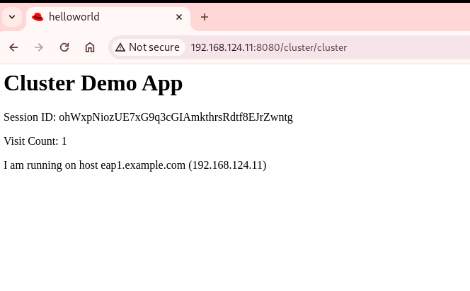
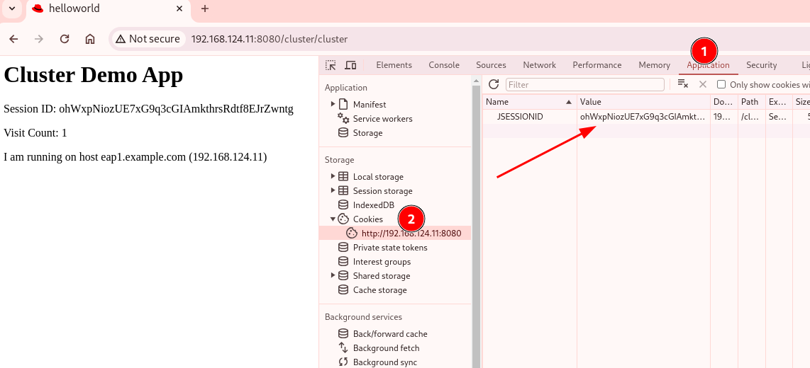

Standalone Mode Clustering (TCP)
By default, the tcp stack also uses multicast to discover other cluster members by using the MPING JGroups protocol. JGroups provides other discovery protocols, such as PING, TCPPING, TCPGOSSSIP, JDBC_PING, FILE_PING, DNS_PING, or KUBE_PING. See the references section to learn more about each discovery protocol.
If you need to avoid multicast communication, then you can customize the tcp stack by changing the discovery protocol to either TCPPING or TCPGOSSIP.
TCPPING is a JGroups protocol that uses a static list to define the cluster members, and uses unicast as an alternative to multicast.
The following parameters are specific to this protocol:
-
initial_hosts - A list of the hosts to look up for cluster membership.
-
port_range - The range that the protocol uses to search for hosts based on the initial port. For example, a port range of two on an initial port of 7600 results in the TCPPING protocol searching for a viable host on ports 7600 and 7601.
-
TCPGOSSIP - Discovers members of a cluster by using an external gossip router.
In this section, we focus on TCP based clustering using the TCPPING protocol and a static list of initial hosts that lists the cluster members.
Exercise: Clustering JBoss EAP 8 instances in Standalone Mode (TCP)
Pre-requisites
-
For the exercises in this chapter, you will need two (2) servers or VMs with JBoss EAP 8.0 installed on them. Your IP addresses maybe different. Replace the values according to your set up.
Host
IP Address
Role
eap1.example.com192.168.124.11Cluster Nodeeap2.example.com192.168.124.12Cluster Node -
Install JBoss EAP 8.0 on both servers. We recommend using the zip file installation method and installing it in a separate directory to prevent overwriting the configuration of the instance that you have used in previous exercises. For all VMs, create a user named
jbossthat will run the JBoss EAP instance.
| This chapter and the following chapters involve a lot changes to the XML configuration files in JBoss EAP. We recommend you backup the configuration files after each exercise so that you have a record of your changes. |
Steps
-
You need to open a number of firewall ports on the
eap1andeap2RHEL 9 VMs for clustering to work. Use the script below to configure the firewall. Execute the script/commands as therootuser:#!/bin/sh # UDP ports firewall-cmd --permanent --zone=public --add-port=23364/udp firewall-cmd --permanent --zone=public --add-port=45688/udp firewall-cmd --permanent --zone=public --add-port=45700/udp firewall-cmd --permanent --zone=public --add-port=55200/udp # TCP ports firewall-cmd --permanent --zone=public --add-port=7600/tcp firewall-cmd --permanent --zone=public --add-port=54200/tcp firewall-cmd --permanent --zone=public --add-port=57600/tcp firewall-cmd --permanent --zone=public --add-port=8080/tcp firewall-cmd --permanent --zone=public --add-port=8009/tcp firewall-cmd --reloadYou can verify that the ports are open using the command below:
[root@server]# firewall-cmd --list-all --zone=public public (active) target: default icmp-block-inversion: no interfaces: enp1s0 sources: services: cockpit dhcpv6-client ssh ports: 23364/udp 45688/udp 45700/udp 55200/udp 54200/tcp 7600/tcp 57600/tcp 8080/tcp 8009/tcp protocols: forward: yes masquerade: no forward-ports: source-ports: icmp-blocks: rich rules:Ensure you run these commands on BOTH eap1andeap2cluster nodes! -
JBoss EAP conveniently provides a number of useful default configuration files for high availability setups. For this exercise, we will use the
standalone-full-ha.xmlconfiguration file for clustering, high availability and load balancing. Inspect thejgroupssubsystem in the$JBOSS_HOME/standalone/configuration/standalone-full-ha.xmlfile:<subsystem xmlns="urn:jboss:domain:jgroups:9.0"> <channels default="ee"> <channel name="ee" stack="udp" cluster="ejb"/> </channels> <stacks> <stack name="udp"> ... </stack> <stack name="tcp"> ... </stack> </stacks> </subsystem>JBoss EAP uses the jgroups subsystem for forming clusters. The jgroups subsystem can work with different types of networks (UDP and TCP) to handle cluster communication. By default, UDP is used for cluster communication.
-
Start the
eap1node as thejbossuser.[jboss@eap1 bin] $ ./standalone.sh -c standalone-full-ha.xml \ -Djboss.bind.address=192.168.124.11 \ -Djboss.bind.address.private=192.168.124.11 \ -Djboss.node.name=eap1 \ -Djboss.messaging.cluster.password=redhat123Each node of the cluster must have a unique name. Use the -Djboss.node.nameflag in the command line to pass a unique name.Note that in our environment, we are binding both the -Djboss.bind.addressand-Djboss.bind.address.privatevalues to the same IP address (The IP address of the respective VMs). Ideally, you should use separate network interfaces with different IPs in separate isolated sub-networks. -
Start the
eap2node as thejbossuser. Pass the IP address and unique node name of the cluster member as command line flags.[jboss@eap1 bin] $ ./standalone.sh -c standalone-full-ha.xml\ -Djboss.bind.address=192.168.124.12 \ -Djboss.bind.address.private=192.168.124.12 \ -Djboss.node.name=eap2 \ -Djboss.messaging.cluster.password=redhat123 -
To configure clustering using the TCP stack, download and inspect the JBoss EAP CLI file at https://github.com/RedHatQuickCourses/eap-qc-apps/blob/main/admin2/new-tcp-stack.cli. Copy this file to both
eap1andeap2.# Define the socket bindings /socket-binding-group=standard-sockets/remote-destination-outbound-socket-binding=jgroups-host-eap1:add(host=192.168.124.11,port=7600) /socket-binding-group=standard-sockets/remote-destination-outbound-socket-binding=jgroups-host-eap2:add(host=192.168.124.12,port=7600) batch # Add the tcpping stack /subsystem=jgroups/stack=tcpping:add /subsystem=jgroups/stack=tcpping/transport=TCP:add(socket-binding=jgroups-tcp) /subsystem=jgroups/stack=tcpping/protocol=TCPPING:add(socket-bindings=[jgroups-host-eap1,jgroups-host-eap2]) /subsystem=jgroups/stack=tcpping/protocol=MERGE3:add /subsystem=jgroups/stack=tcpping/protocol=FD_SOCK:add /subsystem=jgroups/stack=tcpping/protocol=FD_ALL:add /subsystem=jgroups/stack=tcpping/protocol=VERIFY_SUSPECT:add /subsystem=jgroups/stack=tcpping/protocol=pbcast.NAKACK2:add /subsystem=jgroups/stack=tcpping/protocol=UNICAST3:add /subsystem=jgroups/stack=tcpping/protocol=pbcast.STABLE:add /subsystem=jgroups/stack=tcpping/protocol=pbcast.GMS:add /subsystem=jgroups/stack=tcpping/protocol=MFC:add /subsystem=jgroups/stack=tcpping/protocol=FRAG3:add # Set tcpping as the stack for the ee channel /subsystem=jgroups/channel=ee:write-attribute(name=stack,value=tcpping) run-batch reloadWe create
socket-bindingsfor every node in the cluster and give it a unique name, IP address and port number where cluster communication happens. Replace the IP address values as per your environment. We also a new jgroupsTCPPINGstack, that uses the TCP protocol to communicate with cluster members. We finally set the default jgroups stack to the newly created TCPPING stack. -
Execute the
new-tcp-stack.clifile on BOTHeap1andeap2using the EAP CLI and pass the path to the CLI file.[jboss@eap1 bin]$ ./jboss-cli.sh --connect --file=/tmp/new-tcp-stack.cli {"outcome" => "success"} {"outcome" => "success"} The batch executed successfully process-state: reload-required [jboss@eap1 bin]$ :reloadEnsure you execute this script on BOTH eap1andeap2nodes! -
You can inspect the difference in the
standalone-full-ha.xmlfile after you execute this script on both nodes. See https://github.com/RedHatQuickCourses/eap-qc-apps/blob/main/admin2/tpc-udp.diff. -
Download the sample application to test the cluster from https://github.com/RedHatQuickCourses/eap-qc-apps/releases/download/eap8-lp/cluster.war. Copy the WAR file to the
/tmpfolder on botheap1andeap2.$ scp cluster.war jboss@eap1:/tmp/ $ scp cluster.war jboss@eap2:/tmp/ -
Launch the JBoss EAP CLI and deploy the WAR file on both
eap1andeap2nodes.[jboss@eap1 bin]$ ./jboss-cli.sh --connect [standalone@localhost:9990 /] deploy /tmp/cluster.war --forceRepeat the same commands to deploy the WAR file on
eap2. -
Access the test application on
eap1. Using a web browser, navigate to the public IP ofeap1(http://192.168.124.11:8080/cluster). You should see the home page of the application. It prints the session ID value along with a simple counter that increments on every page hit. It also shows which node servers the request (This will become relevant when you introduce a load balancer in the next section and split the traffic between the two nodes). -
The idea behind clustering is to replicate the HTTP session objects between the cluster nodes. Since there is no load balancer running with session stickiness enabled, we need to test it manually from the command line using the
curlcommand and passing the session value as HTTP header (as cookies) values. JBoss EAP creates a unique cookie for every user (called JSESSIOND), that it uses to track HTTP sessions. Open the browser’s DevTools pane (Ctrl + Shift + C for Chrome, then go toApplication > Cookies > http://192.168.124.11:8080) and find the JSESSIONID cookie value. Right click on the value, selectEdit Value, and then copy this value to the clipboard.You cannot use a browser to test this scenario because there is no way to enable or simulate session stickiness. The browser will create a unique session ID for each of the nodes and you will not be able to visualize the replication and failover. -
Use the
curlcommand to send requests to the application and increment the counter. Replace theCookie:value with your own unique JSESSIONID value.$ curl http://192.168.124.11:8080/cluster/cluster \ --header "Cookie: JSESSIONID=HxM_z7c2tbtHdpzo0JnYkV5jNZWEfHvxrP0-bja-.eap1" ... <h1>Cluster Demo App</h1> <p>Session ID: ohWxpNiozUE7xG9q3cGIAmkthrsRdtf8EJrZwntg</p> <p>Visit Count: 2</p> <p>I am running on host eap1.example.com (192.168.124.11)</p> ...Run this
curlcommand a few more times and observe theVisit Countvalue increasing by one for every request. -
The session ID created on
eap1should have been replicated to all members of the cluster. To verify this behavior, pressCtrl + Cin theeap1terminal window to stop theeap1node and eject it from the cluster. Observe the logs in the terminal window oneap2. The cluster has noticed thateap1is no longer available and it rebalances.... ISPN100001: Node eap1 left the cluster ISPN100007: After merge (or coordinator change), recovered members [eap2]... ... -
Use the
curlcommand to send requests toeap2. Replace theCookie:value with the same JSESSIONID value that you used for sending requests toeap1.$ curl http://192.168.124.12:8080/cluster/cluster \ --header "Cookie: JSESSIONID=HxM_z7c2tbtHdpzo0JnYkV5jNZWEfHvxrP0-bja-.eap1" <h1>Cluster Demo App</h1> <p>Session ID: ZFf88oPFpFjtMX12TEbVuPJCHDpPO4Dcrj9rm4_6</p> <p>Visit Count: 3</p> <p>I am running on host eap2.example.com (192.168.124.12)</p> -
Observe how the counter value is incremented, and not reset to zero. This is because the counter value (which has been stored in the HTTP session) has been replicated to
eap2. Send a few more requests and notice the counter value is incremented by 1 for every request. -
Optional: Test failback. First, restart
eap1and let it join the cluster. Now, killeap2and re-test the cluster application using curl, but this time send requests toeap1. Observe that the counter value is not reset, instead it is incremented by one as expected.